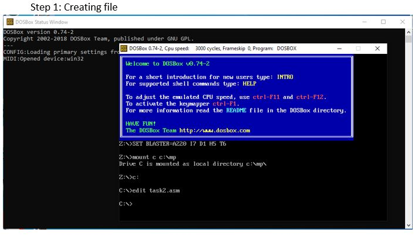
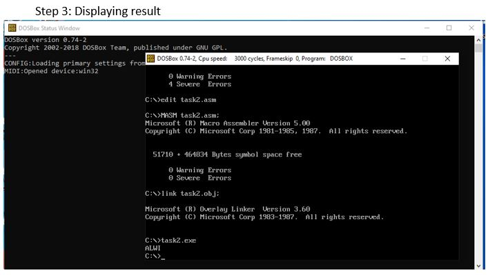
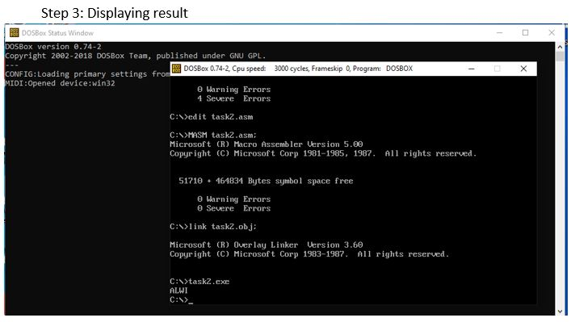

Objective: Write a program to print a string. (i.e. ALWI)
ource Code:
.model // It is an assembler directive that specifies the size of the program
.stack 100h // It declares size of stack
.data // In this segment variables are declared
.code // It is code segment directive
main proc // main procedures start from here
mov DL, 'A' // 'A' is moving to Data Register
mov ah, 02h // Service Routine is being defined here to print the character to AH
int 21h // Programs are returned to windows from DOS
mov DL, 'L' // 'L' is moving to Data Register
mov ah, 02h // Service Routine is being defined here to print the character to AH
int 21h // Programs are returned to windows from DOS
mov DL, 'W' // 'W' is moving to Data Register>
mov ah, 02h // Service Routine is being defined here to print the character to AH
int 21h // Programs are returned to windows from DOS
mov DL, 'I' // 'I' is moving to Data Register
mov ah, 02h // Service Routine is being defined here to print the character to AH
int 21h // Programs are returned to windows from DOS
mov ah, 4ch // Using 4ch service routine number to display
int 21h // Programs are returned to windows from DOS
main endp // Main procedures end here
end main // whole programs end here
Output:

 
